本书作者：测试开发刚哥，文章版权归个人所有，未经授权请勿转载。
nGrinder小众而实用
nGrinder在GitHub的star有1.6k，相比于JMeter6.4k来说，要少很多。在测试资料中，关于压测工具也是以JMeter居多，几乎没有专门针对nGrinder的学习资料。nGrinder既然这么小众，那为什么还要学它呢？因为听说咱们公司的压测平台，底层就是用的nGrinder，对于企业级应用来说，nGrinder还是很实用的，正如它的介绍：“Enterprise level performance testing solution based on The Grinder”。
nGrinder有以下特点：
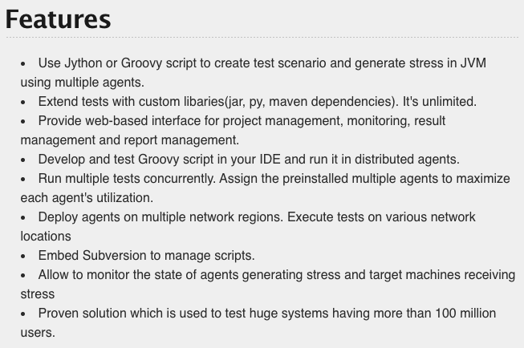
我们编写压测脚本用到的就是第一个特点提到的Groovy脚本，跟Java语法类似，可以无成本切换。
设计理念
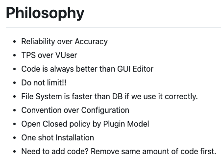
nGrinder架构
nGrinder系统架构如下：
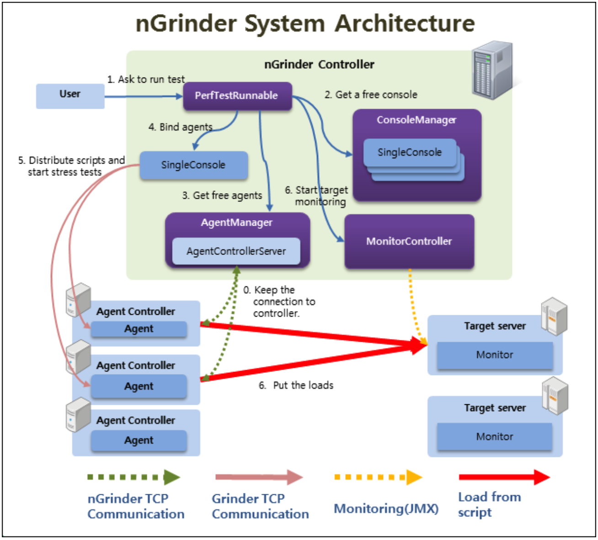
nGrinder的底层是Grinder，基于Grinder的console和agent，nGrinder封装成了controller和agent：
-
controller 提供了Web页面创建测试脚本和配置运行策略，这是nGrinder比较突出的特色了。
-
agent 虚拟用户生成器，创建压测负载。
当用户创建test后，会先创建一个console，AgentControllerServer会根据console分配相应的agent，AgentControllerServer管理着agent pool，负责agent的创建和释放。然后console将test脚本和资源多个已分配的agent，并控制整个test flow直到测试结束。测试结束后，agent会回收至AgentControllerServer以便其他test使用，console也会回收至ConsoleManager。
nGrinder和Ginder最大的不同之处在于，nGrinder在controller中保留了多个console实例和agent。每个console都是跟其他console隔离的，能并发运行。
不像其他压测工具在测试时，会保留agent以确保用户执行test时agent是可用的，也就是“预占”agent。nGrinder只有在真正测试执行时，动态分配agent，这个方案是nGrinder最独特的架构设计。它保证了多个压测任务能并发执行，并发上限只取决于空闲的agent数量。
nGrinder3.1版本以前是单机架构的，如下图所示：
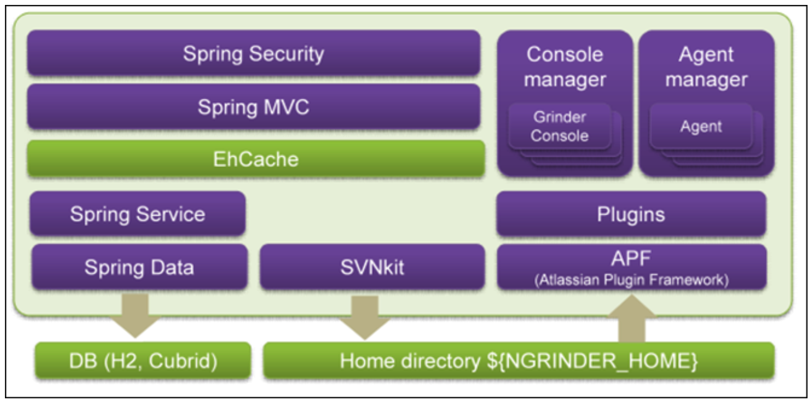
1、nGrinder使用SVNkit，即svn server，来管理脚本文件。svn仓库存放在${NGRINDER_HOME}目录。
2、nGrinder使用EhCache缓存，提升DB和SVN查询性能。
3、nGrinder使用Spring Security保证安全，并使用Atlassian支持扩展。
nGrinder3.1版本之后，支持集群：
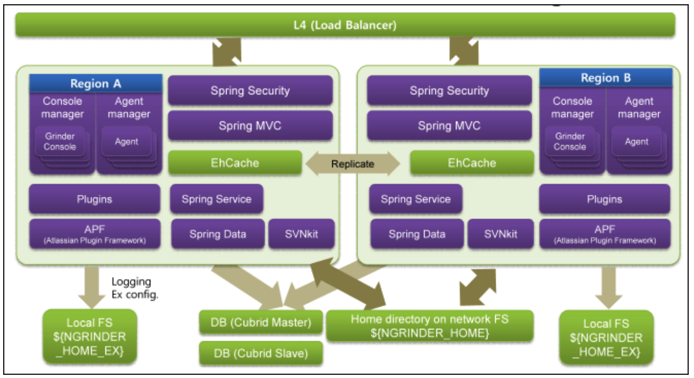
1、集群中所有console共享同样的DB和文件系统，并指向NFS共享的同一个${NGRINDER_HOME}。
2、每个controller有它自己的${NGRINDER_EX_HOME}，存放特殊配置和日志。
3、所有controller相互复制EhCache，让某些数据在集群中都是可见的。
nGrinder技术栈
Client层
Bootstrap、Bootstrap-slider、Jquery、Jquery Validate、Datatables、Select2、JqPlot、CodeMirror。
Controller层
FreeMarker、Spring Security、Spring MVC、GSon、SVNKit Dav。
Service层
The Grinder、Atlassian Plugin Framework、Spring、EhCache。
Data层
Spring Data、H2、Cubrid、Liquibase、SVNKit。
快速入门
安装
在GitHub Release下载war包：
https://github.com/naver/ngrinder/releases
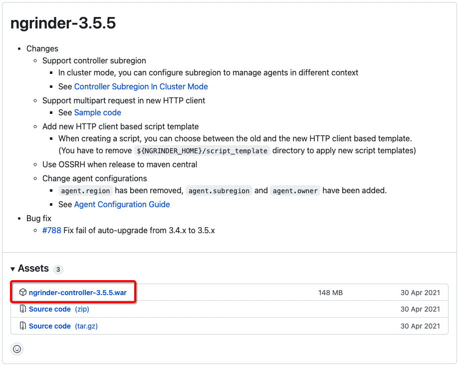
执行命令：
java -jar ngrinder-controller-{version}.war
访问http://localhost:8080/即可。
但是由于nGrinder需要占用大量内存，最好加上额外参数：
java -XX:MaxPermSize=200m -jar ngrinder-controller-3.4.war
默认是8080端口，可以指定端口：
java -XX:MaxPermSize=200m -jar ngrinder-controller-3.4.war --port 80
更多安装说明请参考：
https://github.com/naver/ngrinder/wiki/Installation-Guide
登录
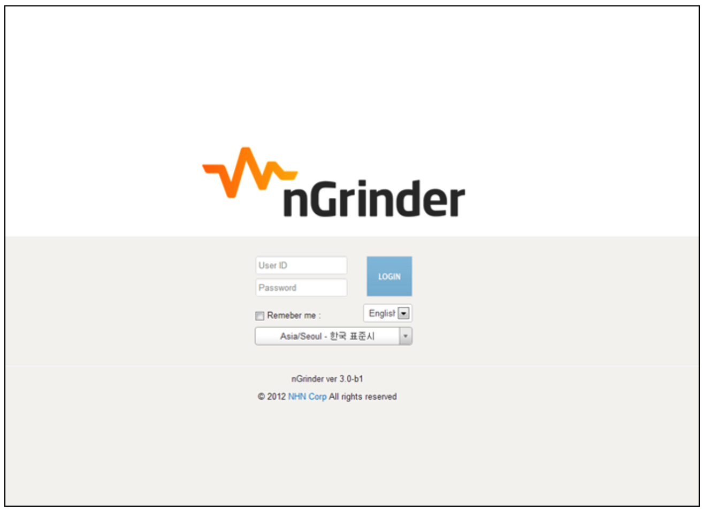
默认用户名/密码为admin/admin。
开始
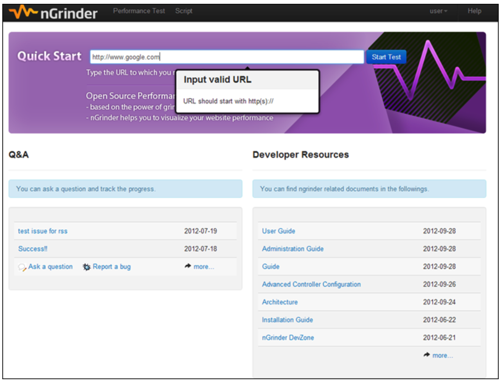
只需要输入url，就能自动生成压测脚本。
然后配置压测策略：
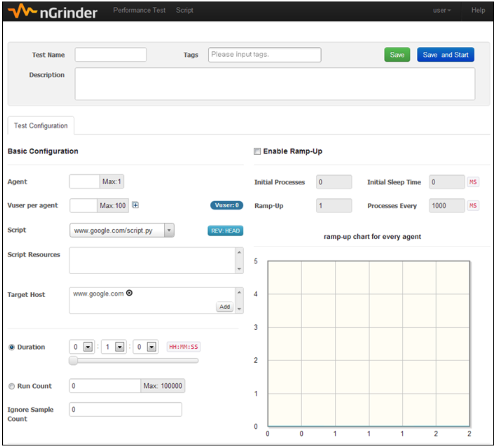
Agent：需要多少个agent，也就是需要多少台机器。nGrinder默认一台机器一个agent。
Vuser per agent：每个agent创建多少个Vuser。Vuser相当于线程。
Duration：持续压多少时间后停止。
Run Count：运行多少次后停止。
点击REV:HEAD后，能切换到脚本视图：
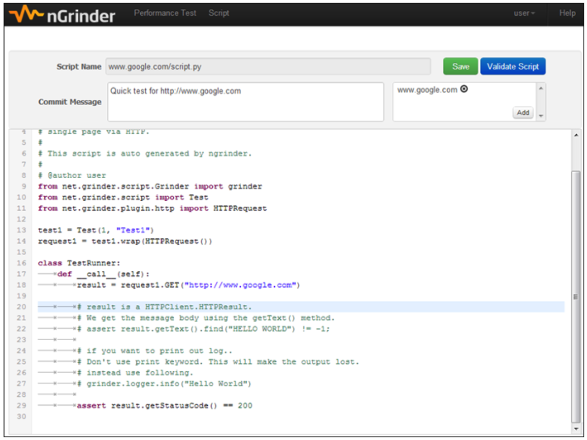
填写好策略后，保存，设置“马上运行”还是“定时运行”：
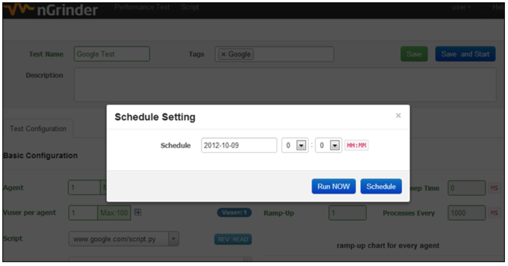
确认后在列表能看到压测任务：
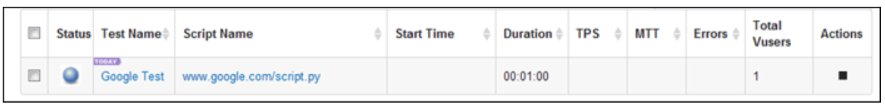
将鼠标悬浮在Status上能看到运行状态的明细：
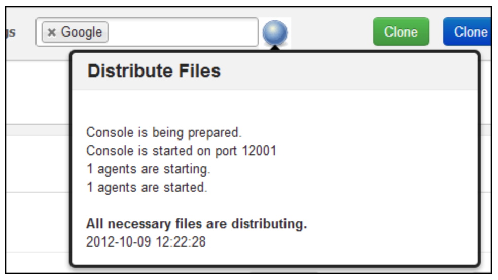
运行开始后会有一段启动时间，因为每个test都需要从console分发测试脚本和资源到agent上：
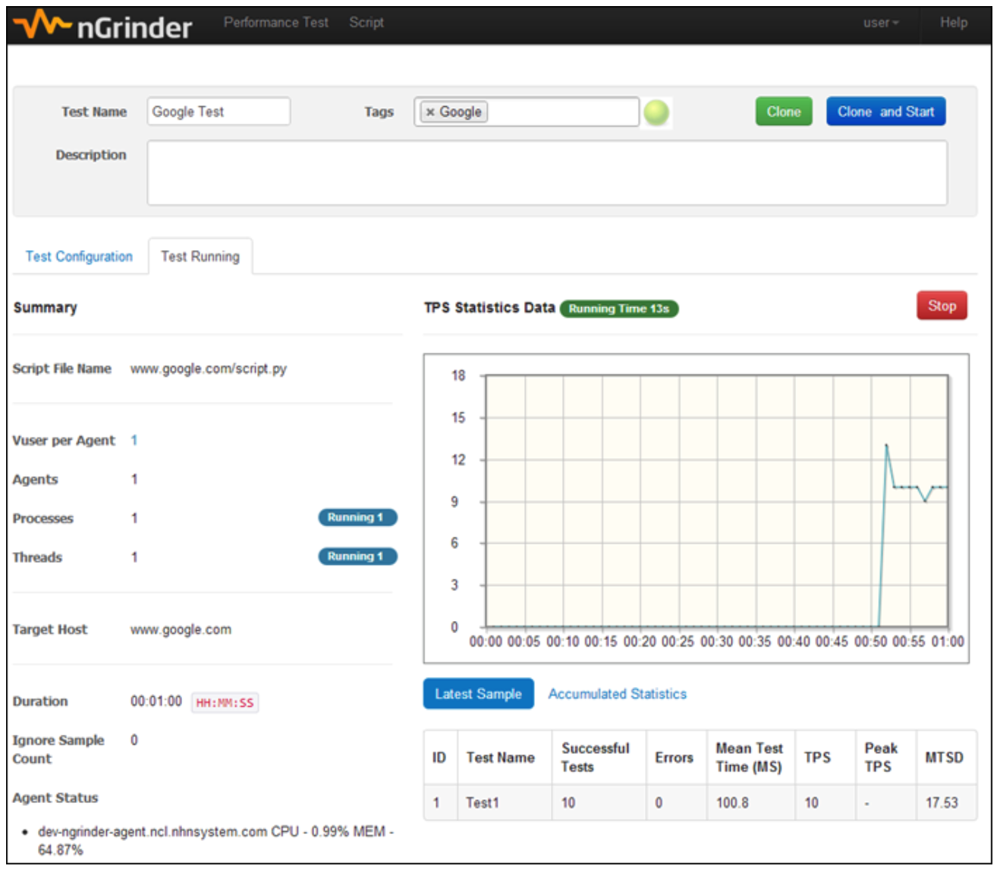
运行结束后，能看到TPS走势图：
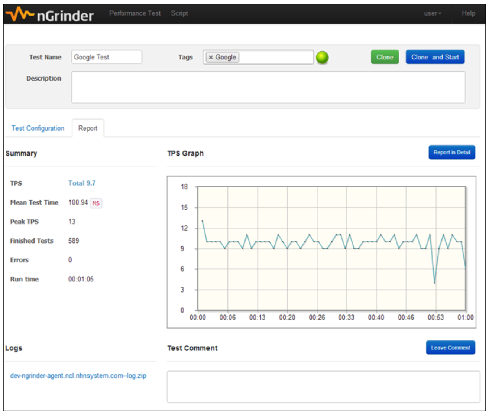
点击Report in Detail按钮，能查看明细报告：
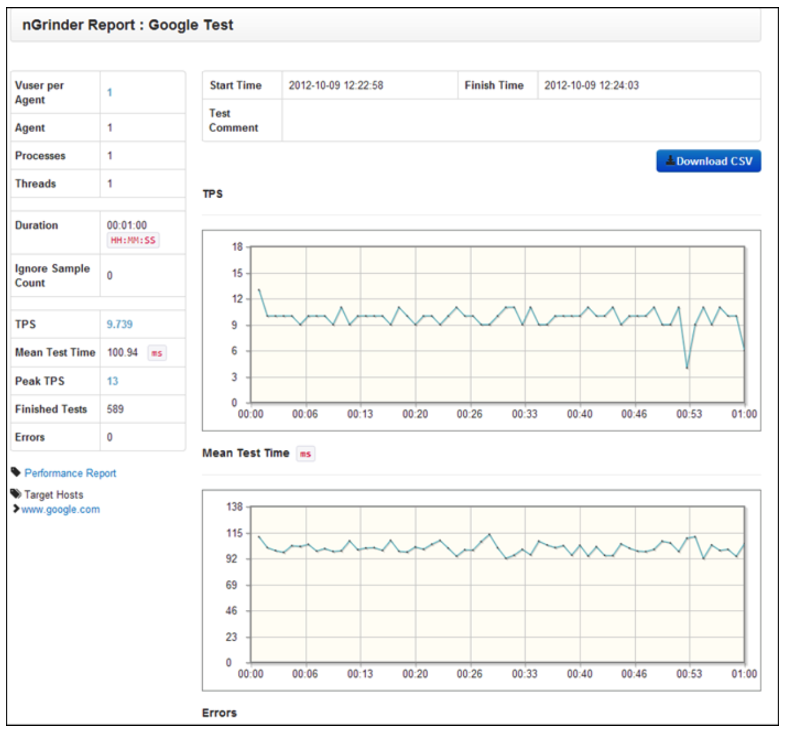
包括TPS、Mean Test Time、Errors。如果在agent上安装了monitor，点击左下角的Perfomance Report能看到更详细的压测报告。
更多关于nGrinder的内容请查阅官方手册和Wiki：
https://github.com/naver/ngrinder/wiki/User-Guide
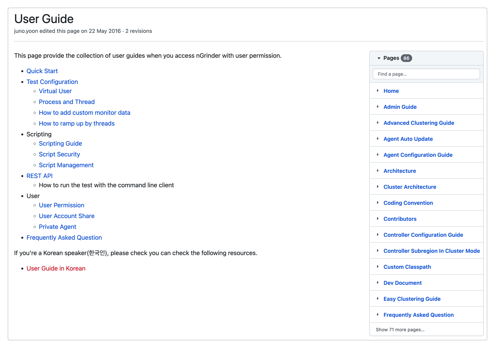
nGrinder有三大优势，一是Web界面化操作；二是多压测任务并行；三是天然支持集群发压。值得大家学习使用。
参考资料：
nGrinder官网 https://naver.github.io/ngrinder/
nGrinder架构 https://github.com/naver/ngrinder/wiki/Architecture
nGrinder安装 https://github.com/naver/ngrinder/wiki/Installation-Guide
nGrinder入门 https://github.com/naver/ngrinder/wiki/Quick-Start
nGrinder手册 https://github.com/naver/ngrinder/wiki/User-Guide